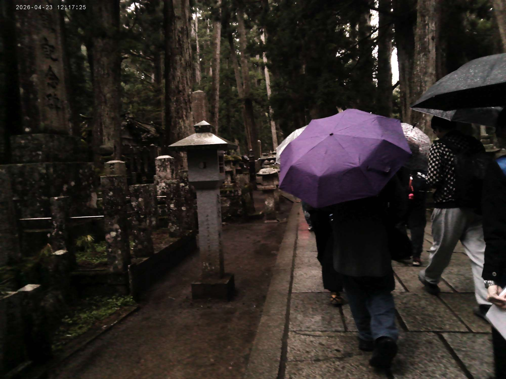
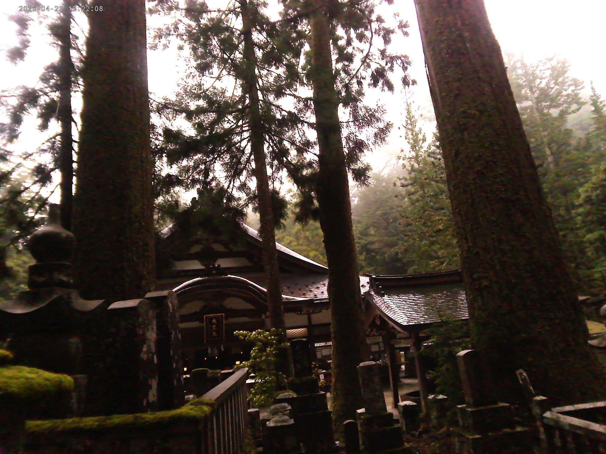
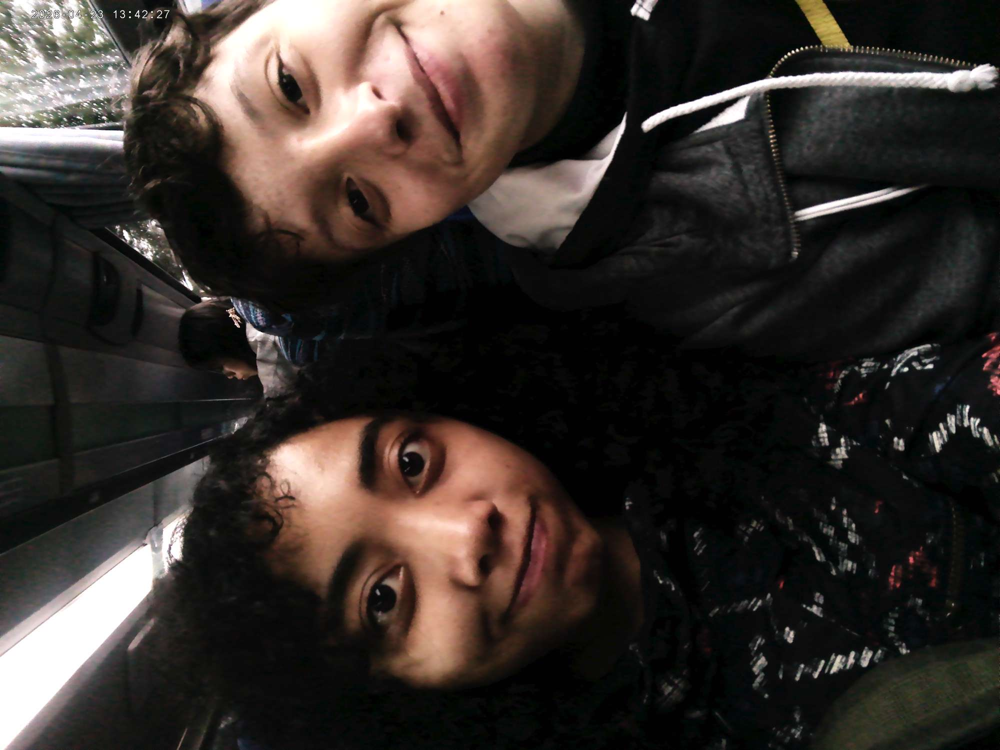
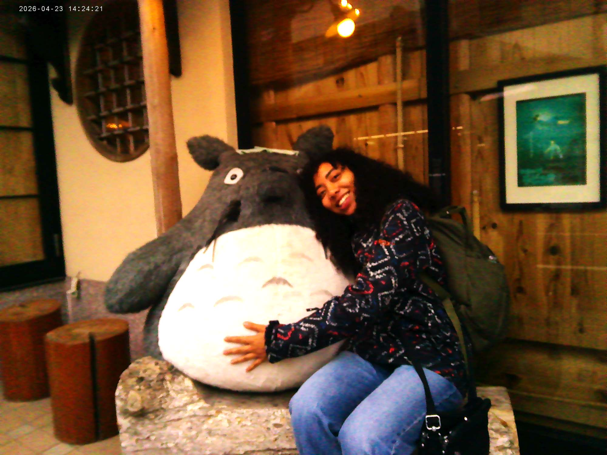
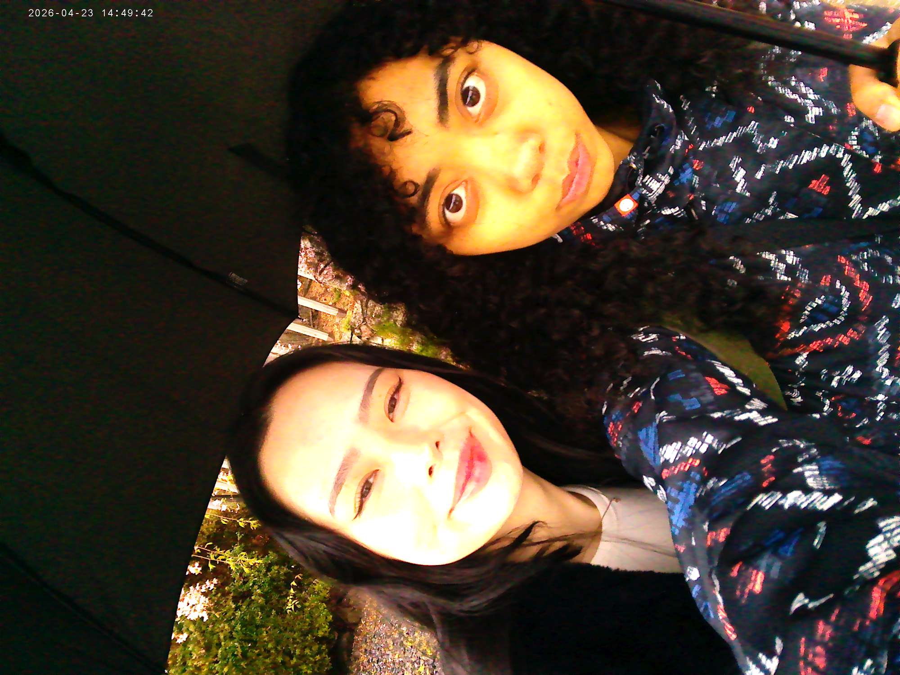
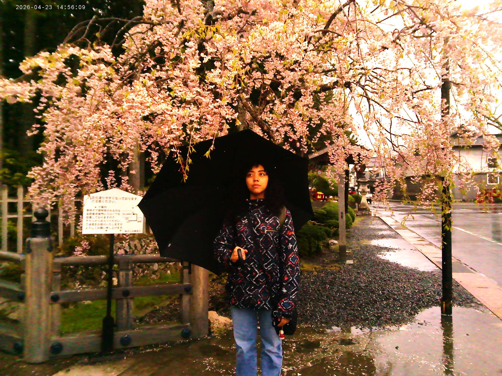
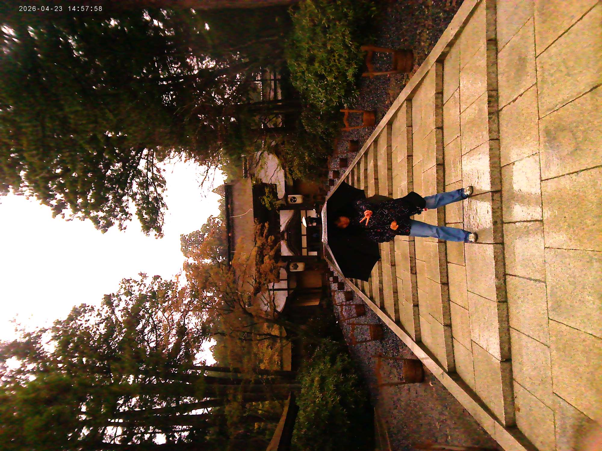

FIELD TRIP TO 小谷さん（Koyasan)
2026.04.23
Hello, blog! Today was a JAM PACKED day because of this field trip. I’m excited to share with you a piece of my mind, MAYASMIND!
FIELD TRIP CONVERSATIONS
Today, I conversed with many in my class in the interim going to the temple. Here are some of the things people said to me:
Emi (エミさん, 19, Germany): “In Japanese, there is a god for everything. A toilet god, a tree god, a building god. That is why the Japanese treat everything with complete respect and courtesy because they are appreciating the workings of the gods. This is called かみさま (kamisama.)”
Maddy (マディさん, 18, Germany): “WOW! AHMAYZING!”
In Germany, they say WOW! AHMAYZING for something even the slightest bit exciting.
Maddy pt.2 (マディさん, 18, Germany): “After school, I’m taking the Shinkansen to Mount Fuji. I’m excited to see… her? Him? I don’t know.”She didn’t know the gender of Mount Fuji.
Nita (ニッタさん, 27, California): “From 1900-1948, Taiwan was taken over by Japan, so many older Taiwanese people understand and speak in Japanese. “ Nita was telling me how she wanted to speak Japanese because she wants to understand what her grandma and mom were saying behind her back.
Nhu (ヌーさん, 29, Australia): “i bought you an onigiri.”ヌーさん bought me an onigiri. I’m gonna cry IT WAS SOOOO GOOD!!!
Emi pt.2 (エミさん, 19, Germany): “How do you say in English? A thousand foot worm? In Japan, they crawl out the sinks and walk around the bathroom.”Thousand foot worms/millipedes wander around Japanese bathrooms waiting for a moment to scare エミさん with all one thousand feet it contains.
THE GRAVEYARD/TEMPLE
We basically walked through a garden of thousands of graves of samurai, children, veterans, and anyone else who deserved to be honored for their death. It was difficult to focus/be zen because I had a ginormous umbrella I was managing and I had a raging headache from the rain, but it was so beautiful.
Before we walked, Emi told me that people hang scarves on the statue of the grave to signify the death of a young child or a miscarriage. I noticed so many of them wrapped around these incredibly carved states of little kids. I hope they found a better world.
FEED ME MORE!
After about an hour + a half of walking, we all came back to the bus to eat lunch. This morning, I bought a sandwich & a yogurt just for this moment, but I truly didn’t need to because little did I know everyone was going to give me food. As I said, Nhu bought me an onigiri and don’t think this was some 200 yen conbini onigiri. She got me a minced meat + salty yolk onigiri from a place that specializes in the art of the onigiri and OMG IT WAS SOOOOO GOOOOD 😭😭😭. Ella and her husband gave me some strawberries. Honey-san (the kindest sweetest woman ever, Korea) gave me two mini Meiji dark chocolates. Natta-san (Russia) gave me a marshmallow filled with chocolate. God, everyone is so kind. I felt so bad not bringing anything to the potluck other than my crushed sandwich and my yogurt drink. I ended up saving my sandwich for dinner, but I should have chopped it into bits and shared with everyone. Maybe next time… My class is seriously so cool. I want to do nice things for them.
PHOTO TIME!

These were the graves + Honey-san’s purple umbrella. Sorry for the super darkness.

This hut was cool. Some old people were singing some cryptic song from inside. It was alluring.

This is me and Emi after eating lunch.

OMG we went to this place that sold Studio Ghibli merch and outside was this huge fluffy Totoro! Image credits go to Nhu-san.
Near the end, Nhu and I took so many photos in front of these two lone cherry blossoms that we were almost late for our bus 😳:

Please ignore her completely mogging me. I tried my best look swaggy.

Nhu asked me to look nonchalant in this.

no longer nonchalant.
OWARI
Oh, and about that super cool and important thing I’ve been talking about for the past two days? Yeeeaaaaah, that’s gonna have to wait till tomorrow. PLEASE TRUST! IT’S EPIIIIIC!
Also, this is a side note but I’ve been listening to Erykah Badu when I’m walking around and there’s just something about her voice or the beat that makes any anxious thought disappear. I could do something so embarrassing and as soon as I hear her silky voice, I’m like “it’s whatever” then swankily walk away. Maybe it’s because she’s tapping into my inner black woman. I feel like a younger version of my mom.
Lastly, I want to express how much I love sleeping on the bus after a long and strenuous field trip. I LOVE IT!!! じゃね！